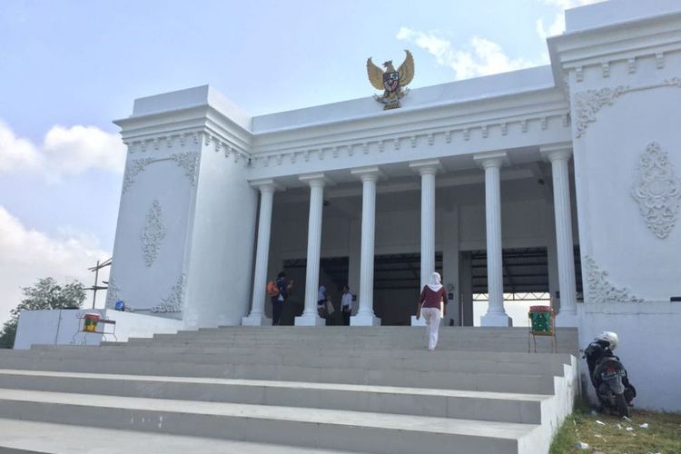

Kantor Desa Mirip Istana Negara
Kantor Desa Kemuningsari Kidul, Jember
merupakan Kantor Desa yang berada di Kemuningsari Kidul, Kecamatan Jenggawah, Kabupaten Jember, Jawa Timur, ini terbilang cukup megah. Meski kantornya berada di sekitar areal persawahan, struktur bangunan kantor Desa Kemuningsari Kidul itu sangat mirip dengan Istana Negara. Hampir setiap hari kantor desa ini tidak pernah sepi dari kunjungan warga yang berasal dari luar desa setempat. Mereka penasaran dengan kantor desa itu karena mendadak viral di media sosial.Warga yang berdatangan tidak lupa berfoto di depan kantor desa itu.
Bentuknya mirip sekali dengan Istana Negara. Jadi enggak usah jauh- jauh datang ke Jakarta, kalau hanya ingin foto di depan Istana Negara sebab di sini ada.Membangun kantor desa mirip rumah dinas Presiden RI itu membutuhkan waktu sekitar empat tahun. Kantor ini mulai dibangun sejak tahun 2014, dan baru diresmikan tanggal 7 Juli lalu. Jadi, pembangunannya dilakukan secara bertahap karena anggaran yang kita miliki terbatas jumlahnya.
Selama empat tahun, pihak pemerintah desa menggelontorkan dana yang tidak sedikit, yakni sekitar Rp 1,8 miliar. Dana itu bersumber dari sisa belanja alokasi dana desa, dari pendapatan desa, bagi hasil pajak, dan swadaya masyarakat.Bangunan kantor desa tersebut sebenarnya baru rampung 75 persen. Sebab, di sisi kanan dan kiri bangunan akan dibuat seperti gerbang sehingga mobil bisa memutar. Selain itu, kita akan bangun tempat bermain anak- anak di sekitar kantor desa sebab kita punya areal lahan cukup luas, yakni 4 hektar. Inspirasi bangunan mirip Istana Negara itu muncul saat Pak Sujarwo yang menjabat selaku Kepala Desa,menonton televisi dan melihat bangunan Istana Negara yang cukup megah.Akhirnya muncul inspirasi untuk membangun kantor desa mirip dengan Istana Negara.